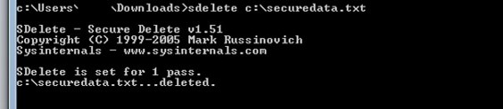

Did you know that when you "delete" files from your computer, they can still remain on your hard disk? In many
cases, deleted files can be recovered with little effort because most computer operating systems will only
delete links to the data so they no longer appear to you, but the actual data remains on the disk.
Getting access to the deleted data is as simple as restoring the links.
Method 1: Using Eraser
To make sure a file is truly gone, a number of tools are available. Eraser is a free and easy-to-use solution
that will overwrite your private information with random patterns until the data is no longer recoverable.
It works with nearly every version of Windows and offers a number of methods of overwriting your data,
including methods approved by the Department of Defense.
Once installed, Eraser integrates nicely into Windows. Whenever you want to securely erase your data, follow these steps.
1. Navigate to the files or folders that you want to securely erase.
2. Right-click on the files and/or folders and an Eraser menu will appear.
3. Highlight and click Erase in the Eraser menu.
Eraser will automatically create the secure erase task and execute it immediately. You will be notified in a
popup window when the task is complete and the files are permanently erased.
Eraser has a number of settings and options that you can configure, including securely deleting recycle bin
contents and scheduling and automating secure deletion tasks.
Method 2: Using SDelete
For users who don't need graphical interfaces, Microsoft has a downloadable command-line tool called SDelete.
Here's how to use this tool.
1. Click Start > Run... , type cmd and press OK or Enter (Return). (Windows Vista and Windows 7
users can just click Start and type cmd in the Windows Search box.)
2. Navigate to where you have SDelete downloaded. For example, if it's located at C:\cmdtools,
type cd C:\cmdtools, and press Enter.

3. Now type sdelete , and press Enter, where is
a standard Windows path. For example, to delete C:\mysecuredata.txt, you would type sdelete c:\mysecuredata.txt, and press Enter.
4. Once they're deleted, you will receive confirmation that your files or folders have been permanently deleted, and you're done!
Now that you have the right tools for the job, you can feel confident
in knowing that your data has actually been removed from your hard disk and will no longer be recovered by anyone (not even by you).
Method 3:Physically Destroy The Hard Drive
This method is a bit rough, but can be an alternative in some situations. If you don’t want to go through the
long process of wiping your hard drive and you are not planning on using the drive again then it is better to
destroy it. This will ensure no one is able to extract data from it by any means (although, you have to
destroy it properly).
There are many ways a hard drive can be destroyed, including grinding, pulverization, melting, incineration and
disintegration. Although, you will need proper machines and tools to do that. If you would like to destroy it
by yourself, then you can drill or nail it as many times you like until you are satisfied (it’s never as good
as pulverizing it obviously, but it should stop most data thieves seeking your personal information). Just make
sure the Platter of the hard drive is destroyed properly (it’s that round Disk). Also use proper equipment and
wear goggles. NEVER burn or put the hard drive in acid, let the professionals handle such tasks.
For SSDs you will have to destroy the memory chips properly to ensure all data is unrecoverable. All the data is
stored on the memory chips and there is no Platter like in Hard drive.